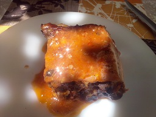

Costillas a la barbacoa

Ingredientes para 8 personas:
- 2 kg de Costillas de cerdo en 2 trozos aproximadamente
- Sal
- 4 o 5 dientes de Ajo
- Orégano
- 1 vaso de Vino blanco
- 1 lata de coca cola
- 1 vaso de kétchup
- 2 cucharadas de mostaza
- 2 cucharadas de miel
Realización:
Machaca los ajos con el vino , el orégano y
1 cucharadita de sal , adobada las costillas y
dejas en reposo 1 hora , calienta el horno a 200ºC ,
en la túrmix bate la coca cola , con el kétchup , la mostaza
y la miel , echa un poco de esa salsa en las costillas
(como 1/4 parte) , y ponlas en el horno caliente 3/4 de hora ,
sácalas y dales la vuelta , echa otra parte de la salsa y
vuélvelas a introducir 20 minutos , sácalas , vuelve a darles
la vuelta , incorpora la salsa restante y ponlas en el horno
otros 20 o 25 minutos aproximadamente , hasta que estén
tiernas y servir .